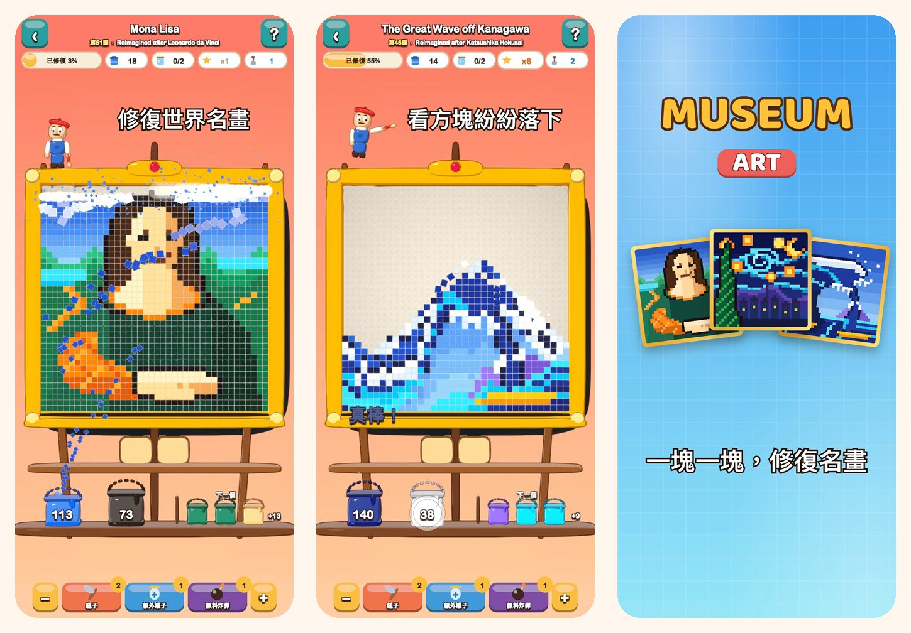

Museum Art
像素藝術色彩拼圖
點一下顏色，看方塊紛紛落下。修復 51 幅像素畫，從《蒙娜麗莎》到伊斯坦堡、巴黎、羅馬和紐約的街頭。
在 App Store 下載
關於遊戲
Museum Art 中的每幅畫都由彩色方塊組成。按顏色逐一清除方塊，看畫作重新綻放光彩。
玩法
- 點一下碰到最底列的色塊，或點一下架上的顏料桶：方塊會飛進自己的桶裡。
- 上方的方塊像沙子一樣滑落，帶來新的走法。
- 某種顏色還沒有桶？先放進托盤上的罐子裡。
- 托盤用得越少，獲得的星星越多。
51 幅待修復的畫作
- 從明亮簡單的場景開始：熱氣球、帆船、小貓和燈塔。
- 大自然：雪峰、高山湖泊、櫻花和黃昏的沙漠。
- 環遊伊斯坦堡、巴黎、羅馬和紐約。
- 大師寶庫：《神奈川沖浪裏》《星夜》《睡蓮》《倒牛奶的女僕》《印象・日出》和《蒙娜麗莎》，以像素畫重新詮釋。
輕鬆又公平
- 每一關都能不用道具過關，重試免費。
- 難關時的道具：鎚子、額外罐子和顏料炸彈。
- 隨時放大查看細節。
- 每幅畫都附有一則趣聞。
- 支援 19 種語言。